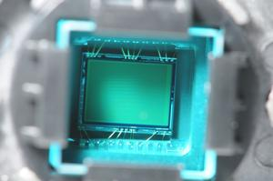

Les images numériques et les capteurs photo
Une image numérique est composée de millions de petits points appelés
pixels. Le capteur photo est le composant qui transforme
la lumière en signal électrique pour créer ces pixels.
Il existe deux grands types de capteurs : le CCD et le CMOS.
Source : pixees.fr

Comment fonctionne un capteur ?
- La lumière entre dans l'objectif de l'appareil photo
- Elle traverse un filtre de couleur (rouge, vert, bleu)
- Le capteur convertit la lumière en signal électrique
- Le signal est converti en valeurs numériques (0 et 1)
- L'image est reconstituée pixel par pixel
- La photo est enregistrée sur la carte mémoire
Les caractéristiques d'une image numérique
- Pixel : le plus petit élément d'une image numérique
- Résolution : nombre de pixels (ex: 1920 x 1080)
- Mégapixel : 1 million de pixels
- Profondeur de couleur : nombre de bits par pixel
- RVB : Rouge, Vert, Bleu — les 3 couleurs de base
Comparaison CCD vs CMOS
| Caractéristique | Capteur CCD | Capteur CMOS |
|---|---|---|
| Qualité d'image | Très bonne | Bonne à excellente |
| Consommation | Élevée | Faible |
| Coût | Cher | Moins cher |
| Vitesse | Lente | Rapide |
| Utilisation | Appareils pro | Smartphones, reflex |
Un smartphone moderne possède un capteur d'environ 12 à 200 mégapixels. Cela signifie que chaque photo contient entre 12 et 200 millions de pixels ! Pourtant, plus de mégapixels ne signifie pas toujours une meilleure photo.
Vidéo sur les capteurs
Voici une vidéo pour mieux comprendre le fonctionnement des capteurs :
Pour aller plus loin
Pour en savoir plus sur les capteurs photo : Wikipedia — Capteur photographique
⬆ Retour en haut